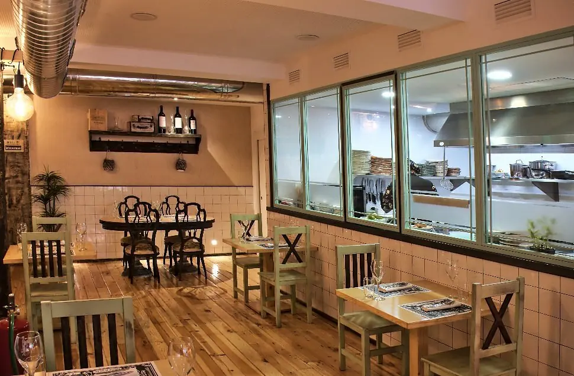

La Cuchara de Baco , restaurante en Logroño
by Javi Sierra
Te guardamos sitio y cuchara.
Cocina tradicional con un toque de vanguardia, en el corazón de Logroño.
Lo de siempre, con otra mirada
Una casa firmada por Javi Sierra, con cocina tradicional, un toque de vanguardia y platos muy cuidados.
Suelo de madera, pared de azulejo, cocina a la vista y una carta de vinos para acompañar lo que llega a la mesa. Puedes venir a por cualquiera de nuestros dos menús.

De los fogones a la televisión
Javi Sierra nació en Amurrio (Álava) y creció en una familia de restaurantes, con su madre en la cocina.
Se dio a conocer con El Capricho de Baco, en Laguardia, y más tarde trajo su cocina a Logroño. Muchos le conocen por la pantalla: es uno de los rostros de la cocina en ETB.
- Juego de cartas Cinco temporadas en ETB2
- El club del tupper Tres temporadas de verano
- Trío de ases Concurso de cocina en ETB2